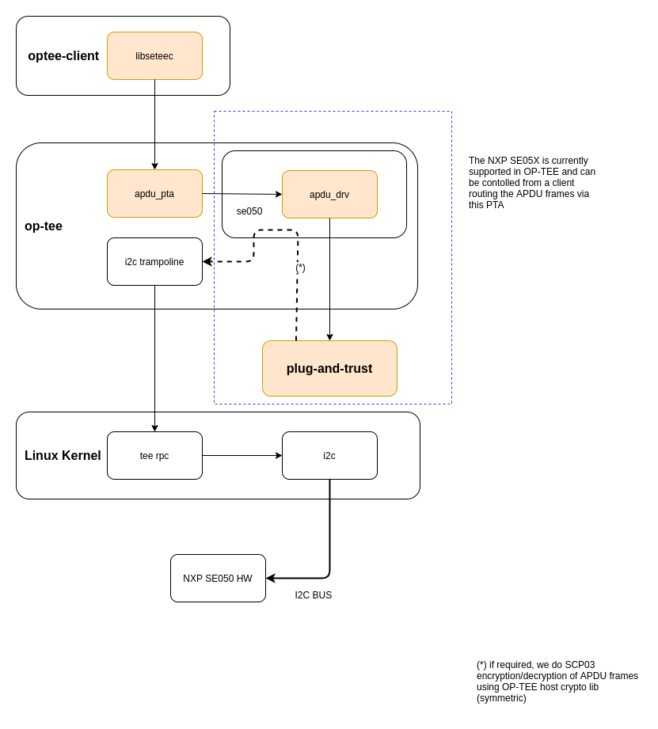

Cryptographic implementation
This document describes how the TEE Cryptographic Operations API is implemented, how the default crypto provider may be configured at compile time, and how it may be replaced by another implementation.
Overview
There are several layers from the Trusted Application to the actual crypto algorithms. Most of the crypto code runs in kernel mode inside the TEE core. Here is a schematic view of a typical call to the crypto API. The numbers in square brackets ([1], [2]…) refer to the sections below.
- some_function() (Trusted App) -
[1] TEE_*() User space (libutee.a)
------- utee_*() ----------------------------------------------
[2] tee_svc_*() Kernel space
[3] crypto_*() (libtomcrypt.a and crypto.c)
[4] /* LibTomCrypt */ (libtomcrypt.a)
[1] The TEE Cryptographic Operations API
OP-TEE implements the Cryptographic Operations API defined by the GlobalPlatform association in the TEE Internal Core API. This includes cryptographic functions that span various cryptographic needs: message digests, symmetric ciphers, message authentication codes (MAC), authenticated encryption, asymmetric operations (encryption/decryption or signing/verifying), key derivation, and random data generation. These functions make up the TEE Cryptographic Operations API.
The Internal API is implemented in tee_api_operations.c, which is compiled into
a static library: ${O}/ta_arm{32,64}-lib/libutee/libutee.a.
Most API functions perform some parameter checking and manipulations, then invoke some utee_* function to switch to kernel mode and perform the low-level work.
The utee_* functions are declared in utee_syscalls.h and implemented in utee_syscalls_asm.S They are simple system call wrappers which use the SVC instruction to switch to the appropriate system service in the OP-TEE kernel.
[2] The crypto services
All cryptography-related system calls are declared in tee_svc_cryp.h and implemented in tee_svc_cryp.c. In addition to dealing with the usual work required at the user/kernel interface (checking parameters and copying memory buffers between user and kernel space), the system calls invoke a private abstraction layer: the Crypto API, which is declared in crypto.h. It serves two main purposes:
Allow for alternative implementations, such as hardware-accelerated versions.
Provide an easy way to disable some families of algorithms at compile-time to save space. See LibTomCrypt below.
[3] crypto_*()
The crypto_*() functions implement the actual algorithms and helper
functions. TEE Core has one global active implementation of this interface. The
default implementation, mostly based on LibTomCrypt, is as follows:
/*
* Default implementation for all functions in crypto.h
*/
#if !defined(_CFG_CRYPTO_WITH_HASH)
TEE_Result crypto_hash_get_ctx_size(uint32_t algo __unused,
size_t *size __unused)
{
return TEE_ERROR_NOT_IMPLEMENTED;
}
...
#endif /*_CFG_CRYPTO_WITH_HASH*/
#if defined(_CFG_CRYPTO_WITH_HASH)
TEE_Result crypto_hash_get_ctx_size(uint32_t algo, size_t *size)
{
/* ... */
return TEE_SUCCESS;
}
#endif /*_CFG_CRYPTO_WITH_HASH*/
As shown above, families of algorithms can be disabled and crypto.c will
provide default null implementations that will return
TEE_ERROR_NOT_IMPLEMENTED.
Public/private key format
crypto.h uses implementation-specific types to hold key data for asymmetric algorithms. For instance, here is how a public RSA key is represented:
struct rsa_public_key {
struct bignum *e; /* Public exponent */
struct bignum *n; /* Modulus */
};
This is also how such keys are stored inside the TEE object attributes
(TEE_ATTR_RSA_PUBLIC_KEY in this case). struct bignum is an opaque type,
known to the underlying implementation only. struct bignum_ops provides
functions so that the system services can manipulate data of this type. This
includes allocation/deallocation, copy, and conversion to or from the big endian
binary format.
struct bignum *crypto_bignum_allocate(size_t size_bits);
TEE_Result crypto_bignum_bin2bn(const uint8_t *from, size_t fromsize,
struct bignum *to);
void crypto_bignum_bn2bin(const struct bignum *from, uint8_t *to);
/*...*/
[4] LibTomCrypt
Some algorithms may be disabled at compile time if they are not needed, in order to reduce the size of the OP-TEE image and reduces its memory usage. This is done by setting the appropriate configuration variable. For example:
$ make CFG_CRYPTO_AES=n # disable AES only
$ make CFG_CRYPTO_{AES,DES}=n # disable symmetric ciphers
$ make CFG_CRYPTO_{DSA,RSA,DH,ECC}=n # disable public key algorithms
$ make CFG_CRYPTO=n # disable all algorithms
Please refer to core/lib/libtomcrypt/sub.mk for the list of all supported variables.
Note that the application interface is not modified when algorithms are
disabled. This means, for instance, that the functions TEE_CipherInit(),
TEE_CipherUpdate() and TEE_CipherFinal() would remain present in
libutee.a even if all symmetric ciphers are disabled (they would simply
return TEE_ERROR_NOT_IMPLEMENTED).
Add a new software based crypto implementation
To add a new software based implementation, the default one in core/lib/libtomcrypt in combination with what is in core/crypto should be used as a reference. Here are the main things to consider when adding a new crypto provider:
Put all the new code in its own directory under
core/libunless it is code that will be used regardless of which crypto provider is in use. How we are dealing with AES-GCM in core/crypto could serve as an example.Avoid modifying tee_svc_cryp.c. It should not be needed.
Although not all crypto families need to be defined, all are required for compliance to the GlobalPlatform specification.
If you intend to make some algorithms optional, please try to re-use the same names for configuration variables as the default implementation.
[5] Support for crypto IC
Some cryptographic co-processors and secure elements are supported under a Generic Cryptographic Driver interface, connecting the TEE Crypto generic APIs to the HW driver interface. This interface is in core/drivers/crypto/crypto_api and should be followed when adding support for new devices.
At the time of writing, OP-TEE does not support the GP TEE Secure Element API and therefore the access to the secure element - the NXP EdgeLock® SE05x - follows the Cryptographic Operations API presenting a single session to the device. This session is shared with the normal world through the PKCS#11 interface but also through a more generic interface (libseetec) which allows clients to send Application Protocol Data Units (APDUs) directly to the device.
Notice that cryptographic co-processors do not necessarily comply with all the GP requirements tested and covered by the OP-TEE sanity test suite (optee_test). In those cases where the cryptographic operations are not supported - i.e: the SE05x does not implement all RSA key sizes - we opted for disabling those particular tests at build time rather than letting them fail.
NXP SE05X Family of Secure Elements
This family of I2C bus devices are supported through the se050 cryptographic driver located at core/drivers/crypto/se050. Before the REE boots, the session with the device is established using one of the OP-TEE supported I2C platform device drivers. Once the REE is up, the cryptographic driver can be configured to use the I2C driver in the REE (via RPC service) or continue using the one in OP-TEE.
Unless the Secure Element owns the I2C bus (no other elements on the bus, no runtime-PM and so forth), it is recommended to route all traffic via the Normal World. Initial communication with the device is not data intensive and therefore slow I2C drivers - perhaps those not using DMA channels - do not represent much of a performance drag; the situation changes once clients start hammering the device.
If using the REE for I2C transfers, it is also imperative to configure the
driver so that the GP Secure Channel Protocol 03 is enabled prior to exiting the
Secure World; this way all communication between the processor and the secure
element is encrypted and MAC authenticated. Please check the usage of the
CFG_CORE_SE05X_SCP03_EARLY configuration option.
Aside of the secure element integration as an OP-TEE cryptographic driver, OP-TEE also presents an Application Protocol Data Units (APDU) interface to users via its OP-TEE client.

Access to the Secure Element from libseetec and the APDU PTA.
Using this interface, priviledged applications can control the Secure Element to inject or delete keys or certificates, encrypt, decrypt, sign and verify data and so forth. An application implementing a subset of those functions can be seen in this Foundries.io repository: fio-se05x-cli
This reference code is not fully functional in mainline as it’s not yet possible to import keys and certificates from the Secure Element into OP-TEE’s PKCS#11 implementation. However, a user could still clear the Secure Element NVM memory and read certificates stored in it.